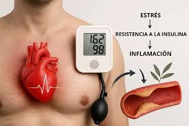
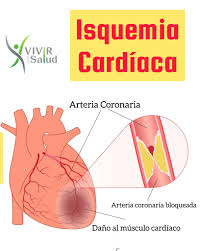
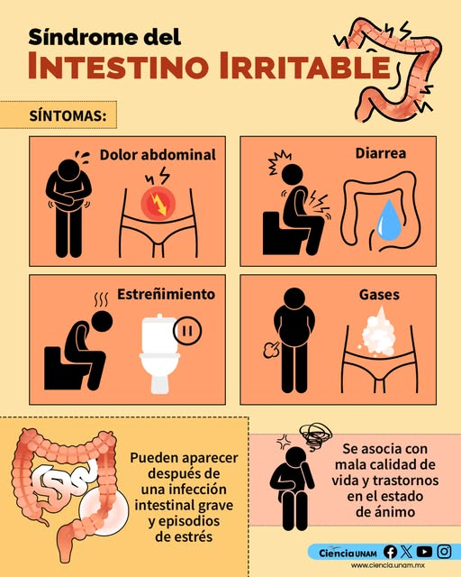
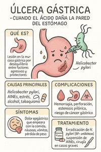
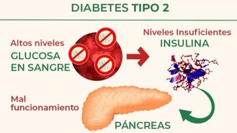
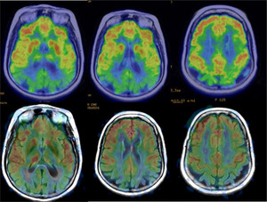
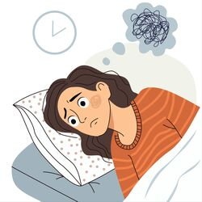
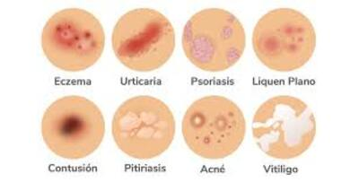
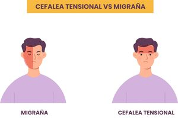

Impacto Sistémico del Cortisol
Cuando el estrés deja de ser agudo y se vuelve crónico, el torrente constante de hormonas daña tejidos, debilita el sistema inmune y altera la comunicación celular. Explora los sistemas afectados abajo:
Un debilitamiento temporal e imprevisto del músculo cardíaco (principalmente el ventrículo izquierdo) gatillado por un fuerte impacto emocional. Clínicamente simula un infarto agudo al miocardio sin obstrucción arterial.

La liberación constante de adrenalina y cortisol eleva la frecuencia cardíaca y estrecha los vasos sanguíneos. Con el tiempo, esto causa un daño estructural en las paredes arteriales, obligando al corazón a trabajar el doble.

Disminución transitoria del flujo de sangre al tejido del corazón debido a espasmos en las arterias coronarias inducidos por episodios severos de ansiedad, lo que priva a las células de oxígeno adecuado.

Alteración directa del eje cerebro-intestino. El sistema nervioso entérico reacciona al estrés agudizando la sensibilidad al dolor, alterando la motilidad (provocando diarrea o estreñimiento) e inflamando el revestimiento intestinal.

Aunque la mayoría son causadas por la bacteria *H. pylori*, el estrés disminuye la producción de la mucosa protectora del estómago y altera el flujo sanguíneo gástrico, haciendo que los jugos ácidos dañen las paredes estomacales con mayor facilidad.

El cortisol bloquea la eficacia de la insulina para obligar a la glucosa a permanecer en la sangre (proporcionando energía de "combate"). A largo plazo, esta resistencia a la insulina agota el páncreas y eleva los niveles de azúcar.

El estrés activa receptores de grasa en la zona visceral (abdomen). Además, el cortisol altera las hormonas del hambre (ghrelina y leptina), empujando al cuerpo a almacenar energía y a buscar carbohidratos de forma compulsiva.

Niveles crónicos de cortisol atrofian las neuronas localizadas en el hipocampo (el centro de la memoria y el aprendizaje), acelerando el envejecimiento cerebral y reduciendo la plasticidad neuronal.

La hiperactivación del sistema nervioso simpático impide que el cuerpo entre en el estado de relajación necesario para el sueño profundo, rompiendo los ciclos circadianos y provocando fatiga suprarrenal diurna.

Una respuesta autoinmune donde el estrés altera a los glóbulos blancos, haciendo que ataquen erróneamente a los folículos pilosos en fase de crecimiento, provocando caídas de cabello en áreas circulares.
La barrera cutánea se debilita bajo tensión emocional. Las células de la piel liberan histaminas y compuestos inflamatorios que producen brotes severos, descamación, enrojecimiento y comezón incontrolable.

La exposición prolongada al miedo o preocupación remodela la amígdala cerebral, dejándola fija en una posición de "alarma permanente", manifestando crisis de pánico y fobias.
Contracción constante e involuntaria de los músculos del cuello, hombros y cuero cabelludo. Provoca una presión sorda alrededor de la frente y sienes que puede durar días enteros.
